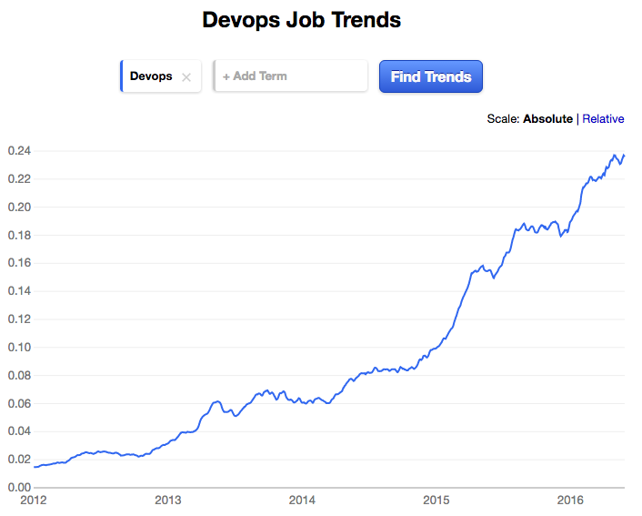

Exercise specific environments custom spawned for your practice
Exercises are selected based on your progress to challenge you enough.
Our experts will work with you live for the lab exercises
Software industry is going through a transformation where developers are empowered with build/test/deploy automation to increase the velocity of feature deployments. DevOps is about automating the build, test, deploy and monitoring to enable continuous delivery of features to customers. There is a huge demand for DevOps engineers in the market now. Companies are looking for DevOps engineers who can come on board and start implementing this automation with out having to train. Below trends from indeed.com shows the growth of DevOps.

The course is designed and taught by Srini Koganti who has 20+ years of experience with B.S(CS) and M.S(CS) from USA. He has rich global experience in different functional areas including as Software Development Manager at Amazon and as Product Architect at InMage Systems. He had started his software development career in Los Angeles and worked as HP-UX Kernel Developer at Hewlett Packard in Richardson, Texas. He had initiated, designed and lead a team in implementing a cloud migration product, at InMage, which later got acquired by Microsoft to use for Azure migrations. He had also worked as DevOps architect at Barclays bank. His broad range of experience ranging from software development to cloud automation gives him a unique edge in field of DevOps automation.
What traditional training offerings lack is a framework to help you achieve extensive hands on experience. You would end up getting lots of theory and little practice. To solve this issue, we have put a framework in place using a next generation training cloud built using the same automation techniques that we teach. Using our Lab As A Service(LAAS) training cloud you can launch your own multi machine DevOps working environment in a single click. Each environment/lab is custom built for each exercise, making the practice frictionless.
You need to have some understanding/background of a programming language or scripting. Ideal candidates for this training are people who have already worked as Software Developer, System Administrator, QA engineer, Scrum master, Project Manager or fresh graduates with major in Computer Science.
Address: 5207 Le Parc Dr, Wilmington, DE 19809, USA
SkillYes provides online hands on bootcamps with high emphasis on hands on exercises. Using our Lab As A Service(LAAS) training cloud and step by step exercises we accelerate the hands on learning. Our coaches will collaborate with you on the shared cloud environment to help with your practice and to unblock you when necessary. Coaches will also review your work and provide feedback with tips and best practices. SkillYes training cloud reduces the ramp up time and increases the effectiveness.